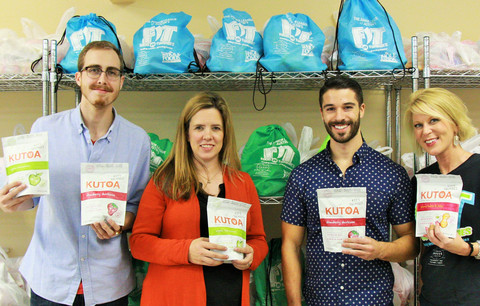
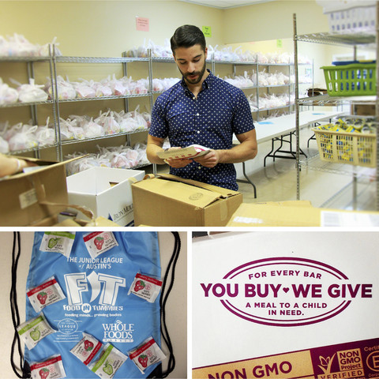
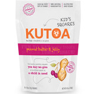
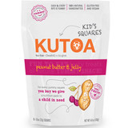

- June 24, 2015
- 0 Comments
Giving Back in the US
Part 3
In a March push to donate a meal for every bar sold, KUTOA started one of it’s many projects to give back. This time our meals, on behalf of our supporters, were donated in the form of nearly 6,000 KUTOA Kids Squares to 4 different organizations. Having completed similar projects in the past, KUTOA had already recognized some key standards in looking for the right organization to receive our donation; that the programs be child oriented and clearly making a widespread impact in the local community. With that in mind, we began our search for the perfect organizations to receive our KUTOA Kid Squares.

The 3rd organization that KUTOA happily sought out is potentially one of our favorites yet. This is the FIT Program, or Food In Tummies Program of the Junior League of Austin. Simply put, FIT feeds economically disadvantaged children within the Del Valle Independent School District. For Austin, a city considered by many to be one of the most progressive areas of Texas, the necessity and impact of a program like FIT can not be overstated. Inside Austin’s Del Valle ISD, over 96% of children in the district are economically disadvantaged, meaning that 96% of its students are greatly dependent on school meal programs as a source of food security. Outside of the meals they receive at school, these children don’t know when or from where their next meal will come. This notion can be particularly hard to digest when one considers their access to food security once the weekend has arrived. Any time that they aren’t in school the children are food insecure, and that’s where FIT comes in.
While it currently remains a small program that only services Hillside Elementary School and Baty Elementary School (both apart of Del Valle ISD), the FIT Program successfully donates over 50,000 backpacks of food to children each year. On every Friday of the school year, FIT goes out to these two schools, backpacks in tow, and distributes backpacks to over 1,600 children, providing for them a source of vital nutrition for the weekend. Nobody could say it better than this 3rd grade student from Hillcrest, who said “Thank you for the food you donated to us; and thank you for filling our empty tummies.". As we said, the nutrition that is provided for these children cannot be overstated. The saying is true, we are what we eat, and this can be especially true for a poorly nourished child. Without adequate food for a child, everything around them is affected, as a result. Their attendance, their overall participation, and their ability to perform and focus on gaining an education all begin to suffer. We’ve all had our days in school when lunch couldn’t come soon enough, and we all know how distracting the voice of hunger can be. It’s for these reasons that KUTOA was proud to partner with the FIT Program, and to silence that hunger in these children’s bellies. As a company devoted to providing the most fundamental necessities for happiness and prosperity, KUTOA couldn’t pass on this opportunity.
Keeping in mind that we wanted to make our impact beyond one organization, we began to reach out to the FIT Program in order to offer them nearly 800 KUTOA Kid Squares. Made with high quality, whole, all natural non-GMO verified ingredients, the FIT Program happily accepted our donation with great thanks. With this donation, on the behalf of all of our fantastic supporters, over 800 kids within the Del Valle ISD can continue to nourish their minds along with their bodies!
KUTOA would like to extend its sincerest gratitude towards the FIT Program and the Junior League of Austin for all that they have accomplished and will continue to accomplish for the children of Del Valle ISD. Your crucial role in the educational success of over 1,600 kids can never be overstated. If you would like to learn more about the Food In Tummies Program and how you can help support the Austin area, visit their website at jlaustin.org.


 
